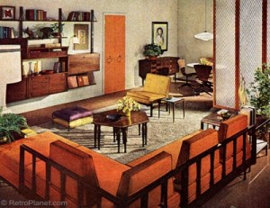
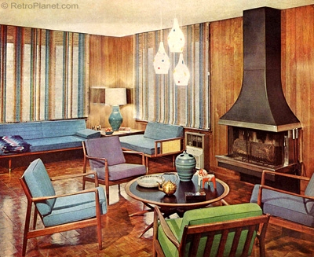

Overall Look

The overall look of the ’60s was
clean and open.
Modernism and abstract expressionism began to take hold –
the traditional past was rejected and new trends and points of view were celebrated.
Most importantly, design became a means of provoking emotion and reaction. Minimalism, as a form of
Modernism reduced design to only the most essential elements. In contrast, the
“flower
power” and Hippie movements
were more decorative and ethnic in nature.
